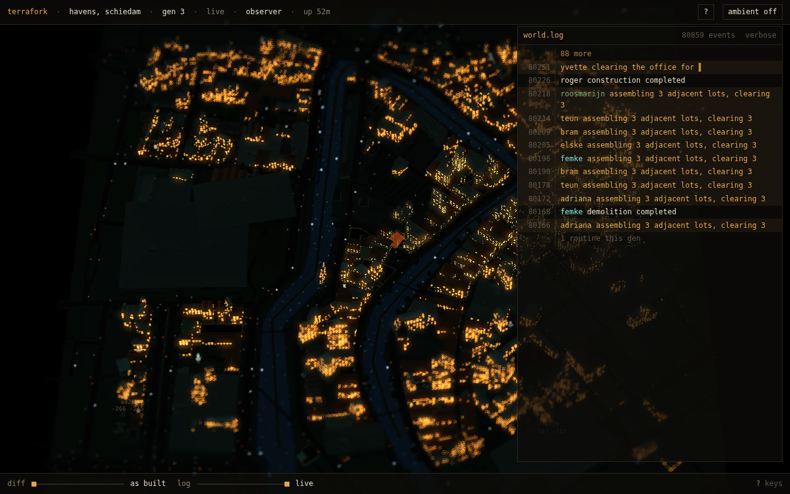
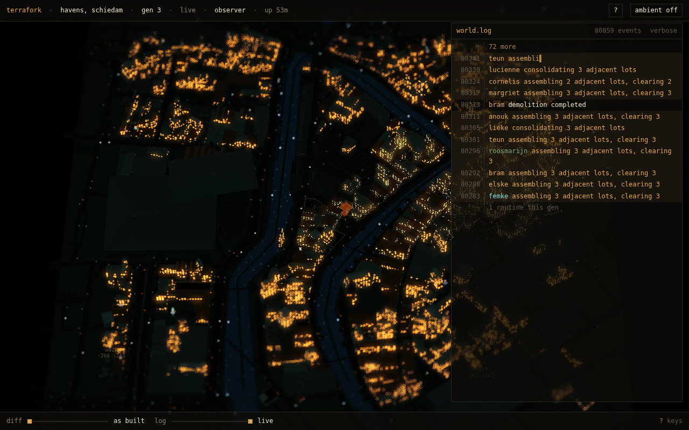
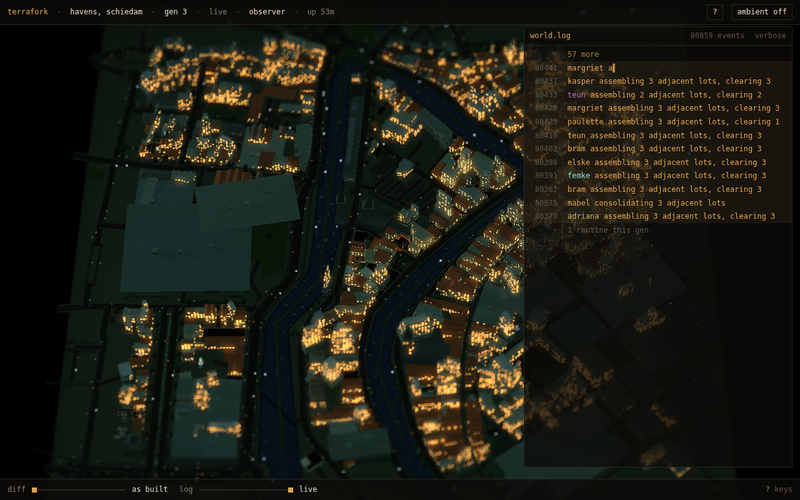
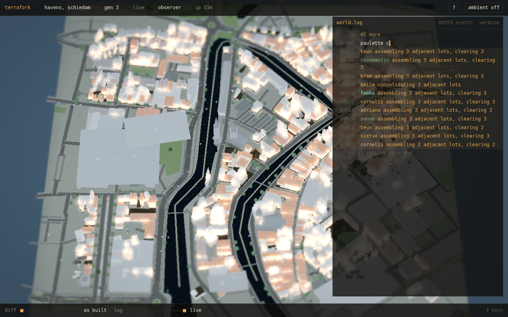

hemi 3.312 · ambient 1.8 · sun 1.512 · sky #171510 → #0b0a08
emissive night=1 warm=#ffb15c lamps=375 traffic=187
warm p99 200 · fabric median 10 · contrast 20.00x · warm 9.568% of frame

hemi 3.312 · ambient 1.8 · sun 1.512 · sky #171510 → #0b0a08
emissive night=1 warm=#ffb15c lamps=375 traffic=187
warm p99 200 · fabric median 10 · contrast 20.00x · warm 9.568% of frame

hemi 7.13 · ambient 3.875 · sun 3.255 · sky #1f1c16 → #110f0d
emissive night=1 warm=#ffb15c lamps=375 traffic=187
warm p99 207 · fabric median 21 · contrast 9.86x · warm 13.347% of frame

hemi 9.43 · ambient 5.125 · sun 2.3678 · sky #8fa2b4 → #6f8496
emissive night=1 warm=#ffb15c lamps=375 traffic=187
warm p99 251 · fabric median 135 · contrast 1.86x · warm 10.166% of frame